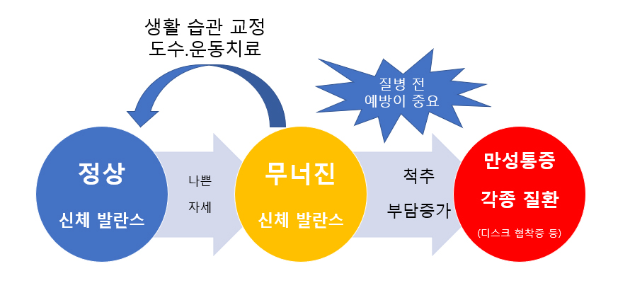

: 척추클리닉 > 척추클리닉이란?
: 척추클리닉 > 척추클리닉이란?
척추클리닉이란?

기존의 의학은 질병이 발생한 이후 해당 질병에 대해서 약물이나 수술을 통해 치료하는 개념이었습니다.
자연스레 원인 불명의 통증이나 경미한 신체 이상은 의사들이 쉽게 생각하는 경향이 있습니다.
최근의 트렌드는 질병이 발생하기 이전 단계(신체 발란스가 무너진 상태)에 개입하여 만성통증이나 질병이 되는 것을 예방하는 것의 중요성이 강조되고 있습니다.
예를 들면 책상과 의자에서 공부나 작업을 오래하는 현대인의 경우 구부정한 나쁜 자세가 오랜 기간 누적되면, 발란스가 깨진 비정상 상태(거북목, 일자목)가 지속되게 됩니다.
거북목 자체는 단기간에 큰 이상을 일으키지는 않지만 이 상태에서 교정을 하지 않게 된다면 경추부의 디스크에 비정상 하중이 가해짐으로써 장기적으로 경추부 관련 척추질환의 이환율을 높이게 됩니다.
따라서 경추 디스크질환이 발생하기 이전에 신체 발란스가 무너졌을 때 빠른 교정을 통해 바른 몸을 유지하는 것이 건강한 생활의 첫걸음이 됩니다.
우리 삼성 본프라임 정형외과 척추클리닉은 척추 세부 전문의의 진료 아래 3D 체형분석기를 통해서 정확하게 체형을 분석하고 전문 도수 운동 치료사들이 치료를 진행하고 있습니다.
이외에도 풍부한 경험의 척추 세부 전문의가 디스크 관련질환, 혁착증 관련 질환의 비수술 시술 및 주사치료를 진행하고 있습니다.